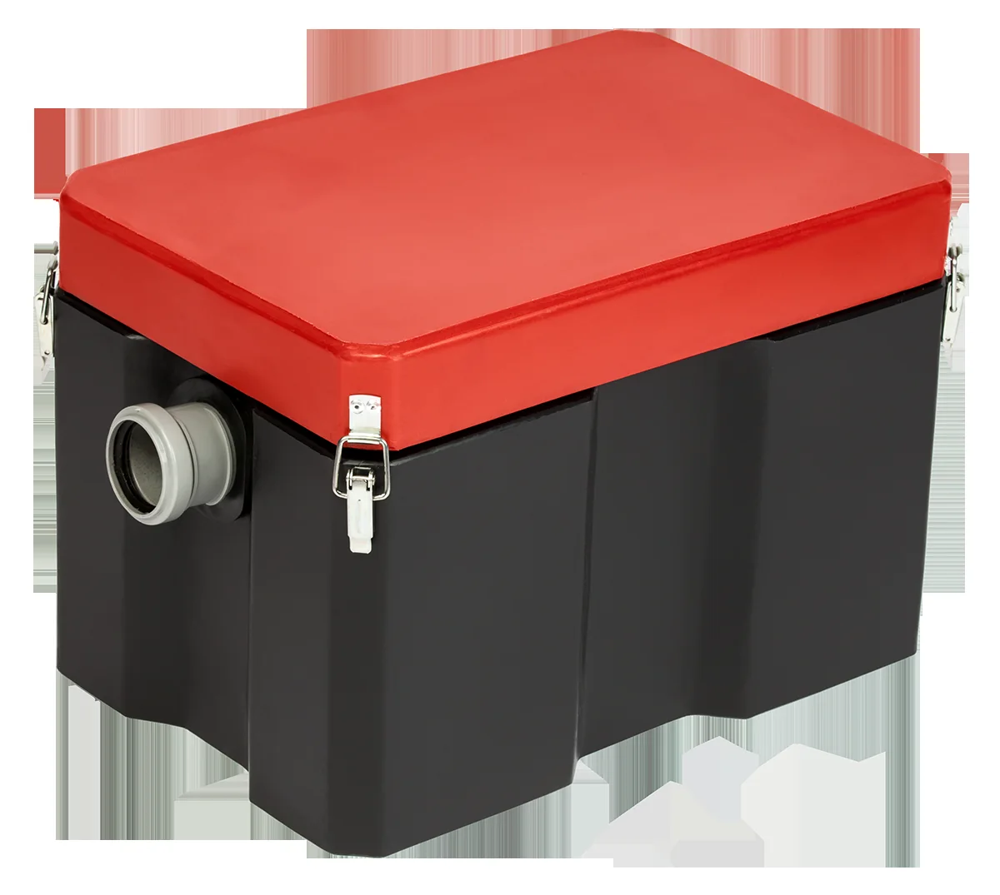

Жироуловитель

Термит
Жироуловитель Термит 0.3×15
Компактный жироуловитель для отделения жиров из бытовых и технологических стоков
Компактный корпусОтделение жиров из сточных водДля установки в соответствии с проектом
5 900 ₽